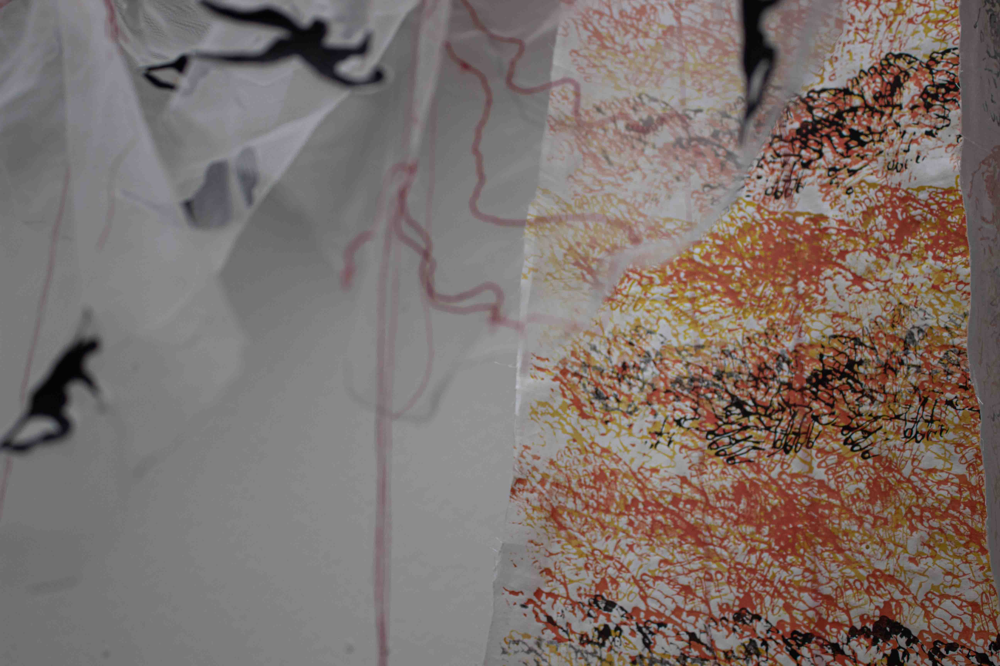
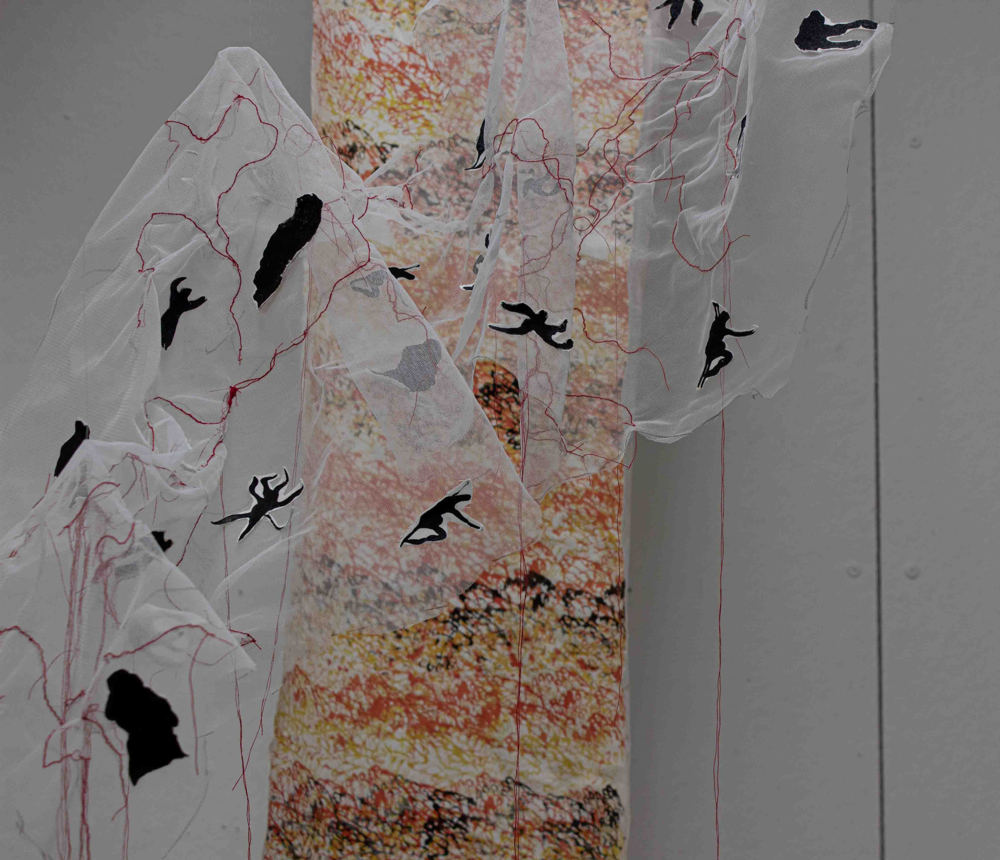
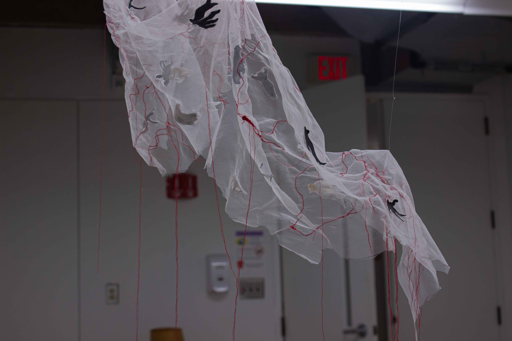
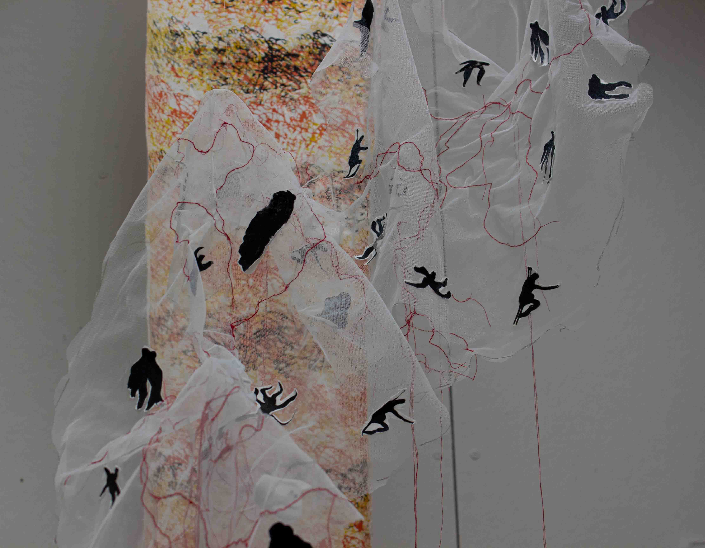
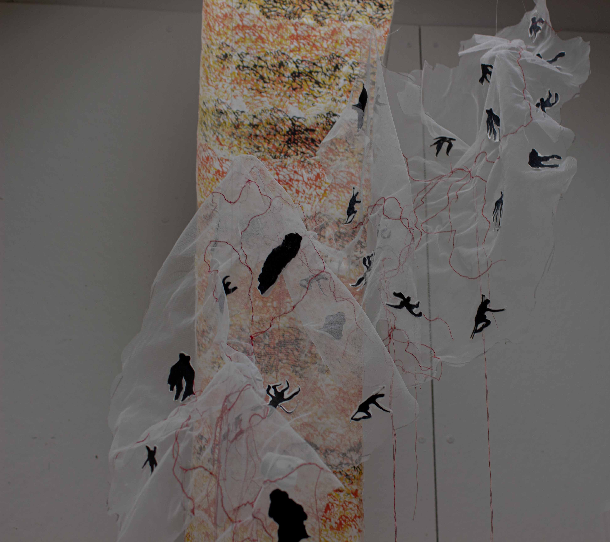
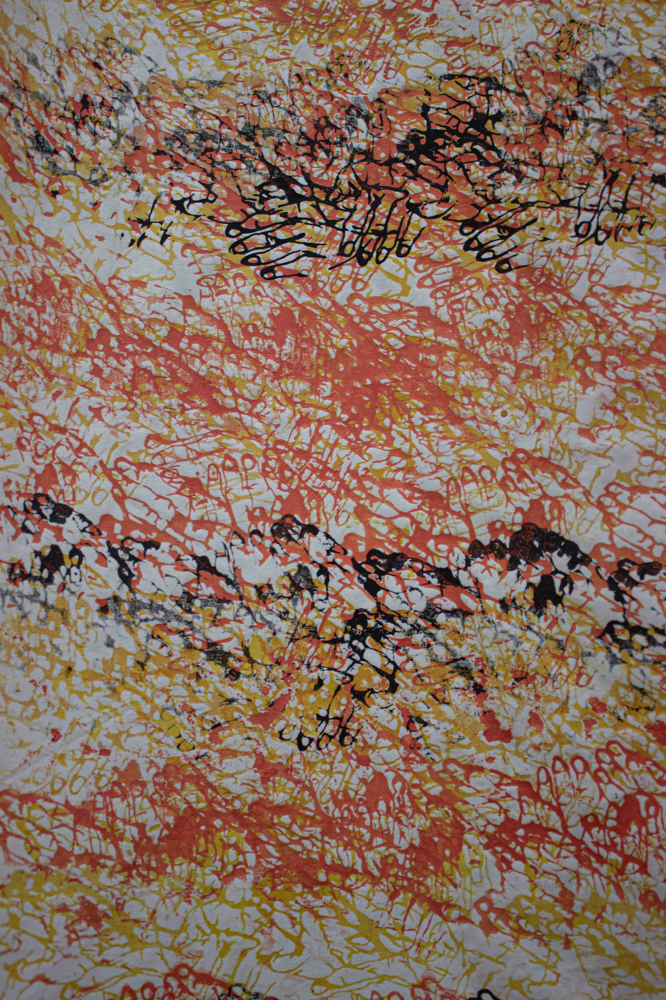
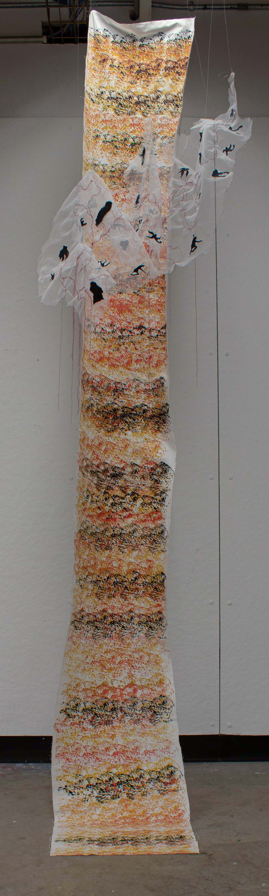

Practice of remembering is a fabric installation composed of screen printing on cotton fabric, sculpted tulle and stitching work. This work co-opts prayer practices rooted in repetitive acts of labour, drawing parallels to the iterative gestures of silk-screen printing. Through repeated impressions of bodies and hands, the installation engages transness as a spiritual experience, a prayer enacted through the ritualistic labour of making. Landscapes of fleetingness emerge through textured topographies of hands and suspension of sculpted tulle, offering a visualisation of trans embodiment.